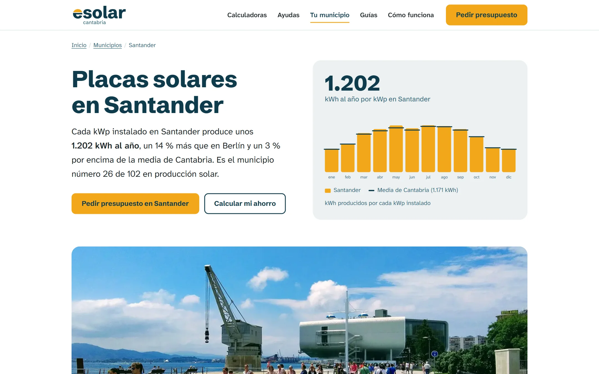
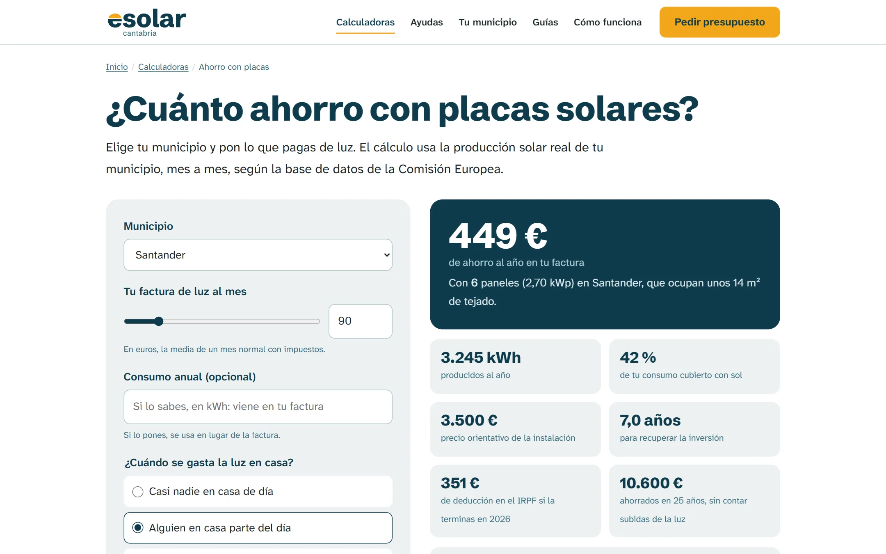
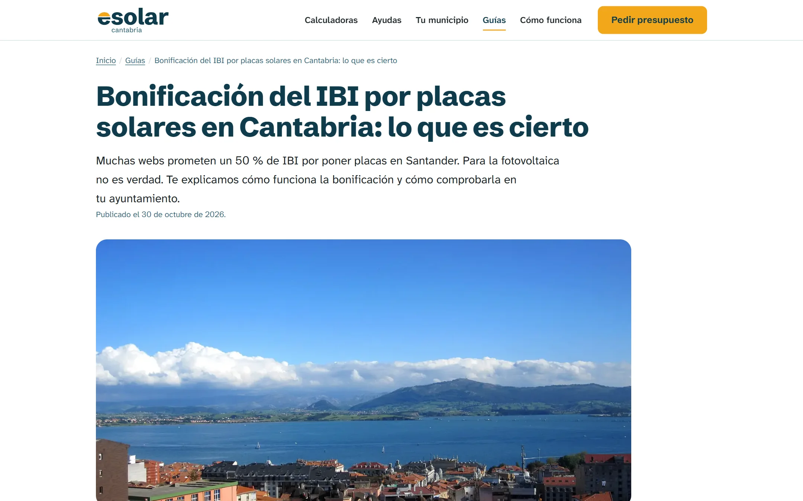
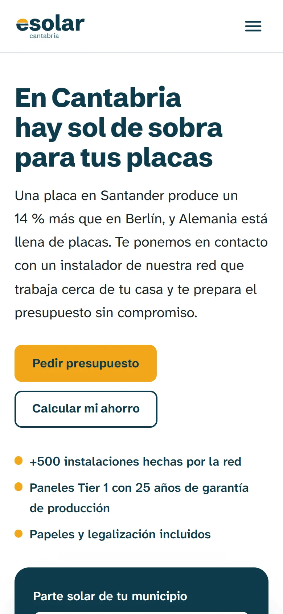
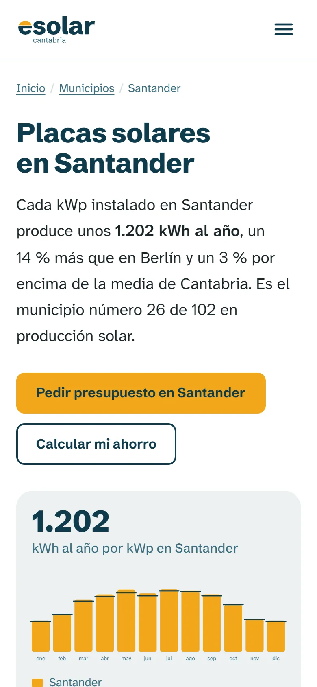
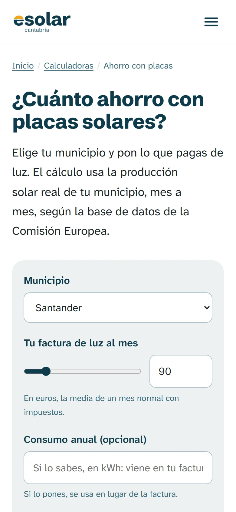

EL PRODUCTO
Quien piensa en poner placas en Cantabria tiene una duda antes que ninguna: «¿aquí hace sol suficiente?». Las webs del sector responden con promesas genéricas. eSolar responde con datos: cada municipio tiene su página con lo que produce de verdad una placa allí, mes a mes, y cada cifra de ahorro sale de esos mismos datos. La web no instala: pone al visitante en contacto con un instalador de la red que trabaja cerca de su casa. He diseñado la marca y la web y la he programado yo solo.
INFRAESTRUCTURA TÉCNICA
- WEB: Astro 7 con salida estática y sitemap: cada página es HTML plano y rápido.
- CLIENTE: JavaScript sin framework para las calculadoras y el gráfico mensual.
- DATOS: Wikidata para los municipios y la API de PVGIS de la Comisión Europea para la producción solar.
- ENTREGA: GitHub Actions compila, comprueba los enlaces y publica en Hostinger por rsync y SSH; formulario en PHP con PHPMailer.
01 / DATOS REALES
102 municipios, cada uno con su sol
Un script cruza Wikidata (nombre, coordenadas y población de cada municipio) con PVGIS, la base de datos solar de la Comisión Europea, y guarda la producción de cada mes. Con eso se genera una página por municipio que dice algo que solo vale para ese sitio.
- Comparaciones que se entienden: «un 14 % más que en Berlín» y la posición del municipio entre los 102 de Cantabria.
- Con caché: las respuestas de PVGIS se guardan para no repetir consultas;
npm run datos -- --nuevolas renueva. - SEO local: 102 páginas con contenido propio, no la misma plantilla con el nombre cambiado.

// Pantalla: Santander, 1.202 kWh al año por cada kWp instalado.
02 / LÓGICA DE DOMINIO
Seis calculadoras con una sola lógica
Ahorro, número de placas, batería, compensación de excedentes, deducción del IRPF y aerotermia. Todas usan el mismo módulo, solar.js, que también calcula las cifras de las páginas de municipio durante el build. Si cambia un supuesto, cambia en toda la web a la vez.
- Mes a mes: cruza la producción de cada mes con el consumo según cuándo se gasta la luz en casa, porque no ahorra lo mismo quien está en casa de día que quien no.
- Supuestos a la vista: precios y rendimientos están reunidos en un solo objeto,
SUPUESTOS, fácil de revisar y de actualizar. - Del cálculo al contacto: «Pedir presupuesto con estos datos» pasa el cálculo y el municipio al formulario, para que el instalador no empiece de cero.

// Pantalla: con 90 € de luz al mes en Santander, 449 € de ahorro al año.
03 / CONTENIDO CON FUENTES
Decir solo lo que es cierto
En energía solar abundan las promesas que no se cumplen. Los 25 artículos de la web enlazan sus fuentes oficiales, y las reglas del proyecto impiden publicar una ayuda, un plazo o una cifra que no se haya comprobado.
- IBI: una bonificación solo aparece si se ha leído la ordenanza de ese ayuntamiento, con el enlace a ella.
- Fotos honestas: imágenes de Wikimedia Commons con licencia libre y crédito visible, y nunca presentadas como instalaciones de la red.

// Pantalla: la guía del IBI, que desmiente el «50 % en Santander».
04 / MOBILE FIRST
La cifra y el botón, lo primero
En el móvil la web se ordena en una columna: primero la producción del municipio y el botón de pedir presupuesto, después el detalle. Las calculadoras se usan con el pulgar y el gráfico mensual se adapta al ancho de la pantalla.

// Portada

// Municipio

// Calculadora
05 / INGENIERÍA DE ENTREGA
Nada sale a producción con un enlace roto
Con 148 páginas generadas a partir de datos, un enlace mal escrito se multiplica. El despliegue comprueba todos los enlaces internos y solo publica si no hay ninguno roto. La contraseña del correo vive en un archivo fuera de la carpeta pública, nunca en el repositorio.
Push a main lanza el flujo de GitHub Actions.
Municipios, calculadoras, artículos y sitemap.
Si hay un enlace interno roto, el despliegue se detiene.
Sube solo lo que cambia a Hostinger.
06 / ARQUITECTURA
Cómo encajan las piezas
- 102municipios de PVGIS
- 148páginas estáticas
- 1módulo de cálculo compartido
- 0frameworks en el navegador
- PHPpara el formulario
Datosantes del build
BuildAstro 7
Navegadorsin framework
Servidorel mismo hosting
// Decisiones técnicas y por qué
solar.js, que usa Astro en el build y las calculadoras en el navegador.npm run enlaces recorre la web generada y el despliegue se detiene si encuentra uno.07 / EN EL CÓDIGO
Fragmentos reales del repositorio
Balance mes a mes
El ahorro no sale de multiplicar la producción anual por el precio de la luz. Para cada mes se reparte el consumo, se calcula cuánto se gasta mientras hay sol, cuánto puede guardar una batería y cuánto excedente se compensa sin pasar del tope.
export function balance({ meses, kwp, consumoAnual, diurno, s = SUPUESTOS, bateriaKwh = 0 }) {
const consumo = repartirConsumo(consumoAnual);
const filas = meses.map((porKwp, i) => {
const produccion = porKwp * kwp;
const c = consumo[i];
let auto = Math.min(produccion, c * diurno);
let excedente = produccion - auto;
let compra = c - auto;
…
// Compensación simplificada: nunca supera lo que pagas por la energía que compras ese mes
const compensacionBruta = excedente * s.precioExcedente;
const tope = compra * s.precioLuz;
const compensacion = Math.min(compensacionBruta, tope);
const ahorro = auto * s.precioLuz + compensacion;
return { mes: i, produccion, consumo: c, auto, excedente, compra, compensacion, ahorro };
});Datos solares de cada municipio
El script pregunta a PVGIS por la producción de 1 kWp con la inclinación óptima en las coordenadas de cada municipio y guarda el resultado en caché después de cada consulta, para que un corte no obligue a empezar de cero.
async function pvgis(lista) {
const ruta = `${CACHE}/pvgis.json`;
const sal = !NUEVO && fs.existsSync(ruta) ? JSON.parse(fs.readFileSync(ruta, 'utf8')) : {};
for (const x of lista) {
if (sal[x.ine]) continue;
const u = `https://re.jrc.ec.europa.eu/api/v5_3/PVcalc?lat=${x.lat}&lon=${x.lon}` +
`&peakpower=1&loss=14&optimalangles=1&outputformat=json`;
const j = await (await fetch(u)).json();
const f = j.outputs.monthly.fixed;
sal[x.ine] = {
anual: Math.round(j.outputs.totals.fixed.E_y),
meses: f.map((k) => Math.round(k.E_m * 10) / 10),
inclinacion: j.inputs.mounting_system.fixed.slope.value,
};
fs.writeFileSync(ruta, JSON.stringify(sal));
}
return sal;
}RESUMEN DEL IMPACTO
eSolar demuestra que una web de captación puede ser útil antes que comercial: datos públicos convertidos en una respuesta concreta para cada municipio, cálculos coherentes en toda la web y contenido que solo afirma lo que puede demostrar. Es SEO local hecho con datos, no con relleno, y una marca propia llevada hasta la última página.